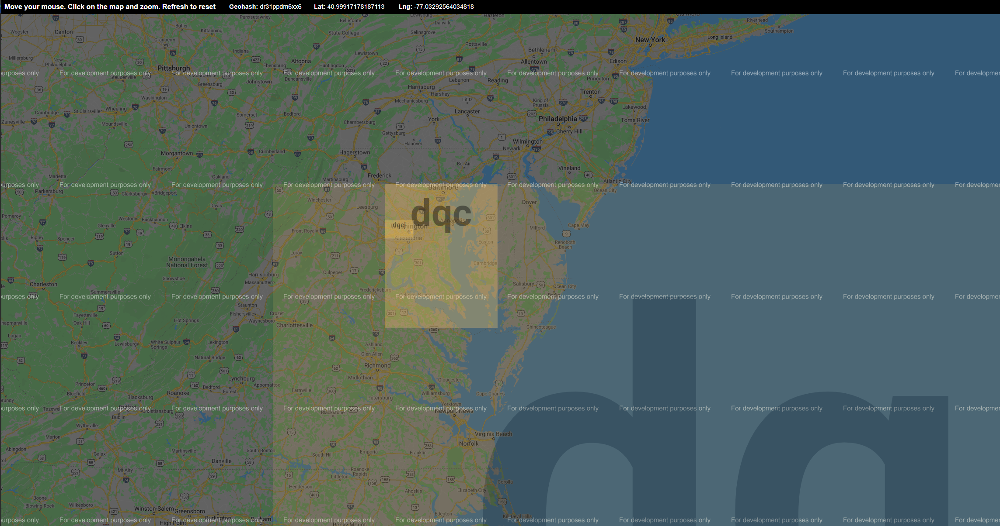

Geohashes and Spatial Indexing¶
Have you heard of Geohashes? I hadn’t until I ran into this pretty common problem in Kluster. Namely, how do I load all the soundings in a given area fast!
You can pretty quickly write some code to just brute force the check. For a box with a minimum and maximum northing and easting, we just find all points with northings in-between the minimum maximum northing of the box and eastings in-between the minimum maximum easting of the box. Where those queries intersect are all the points that are within the box. So easy! The problem is that to do this, we have to load all the northing/easting data for each point, which is a lot of data! If your project has a billion soundings (which is certainly possible!) then it could take an hour to complete! This is what Kluster used to do prior to v0.7.8.
In Kluster 0.7.8, I introduced Geohashes in Kluster, which is an existing idea that revolves around subdividing the Earth into little tiles. I find the easiest way to understand Geohashes is to see it, so check this site out: GeohashExplorer
If you click on Washington DC, you get a view similar to what I have below. You can see the Geohash regions and the little squares getting smaller as you zoom in. Notice the letters in each square, it seems to take more letters for a smaller square, right? A longer string means a smaller cell, or a higher spatial resolution. Looks like I can fit the White House in a cell with a string of 7 characters (dqcjqcp).
{kind=link}
But what is the point of this? Let’s go back to the original problem, how do I get soundings within a specific region without loading a bunch of data and doing a brute force search?
Here is what I do in Kluster to resolve this problem.
Kluster employs geohash with a precision of 7, or a string that is 7 characters long.
Kluster generates a geohash string for each sounding, so that each sounding knows which geohash region it is in. Here you can see a plot of the unique geohash regions in the line. I represent the geohash regions with integer identifiers instead of strings just so the plot works.

Kluster records the unique geohashes for each line in the JSON attribution, so if a line goes through 5 different geohash regions, it knows those identifiers and can load them fast. You can see these regions in the Attribute window for each line.
{kind=link}
So when we query for the Points View, we take the geohash regions in the query rectangle and only brute force those regions for the lines that the regions are in. If I were to query a new rectangle like the one below, I’d know that the query rectangle (shown in green) intersects two geohash regions with precision 7, dq9guth and dq9gut5, so I just need to brute force the lines that have one or both of those regions. And the brute force is simpler too, I just query the geohash data (that every sounding has now) to see which soundings are geohash=dq9guth or geohash=dq9gut5 and load northings/eastings for those soundings. Much less data to load! Sometimes I get lucky and the user will completely enclose a geohash region with a query rectangle, in which case I don’t have to do a brute force search at all!

The soundings are shown here colored by the multibeam line they came from. So you can see that I only had to load a fraction of the currently shown multibeam lines to get the final soundings!
So you can see that spatial indexing is a powerful and almost necessary technique for hydrographic processing software. There are certainly many different ways to handle this problem, with Kluster, I simply tried to pick an approach that aligned with the existing structure as much as possible.